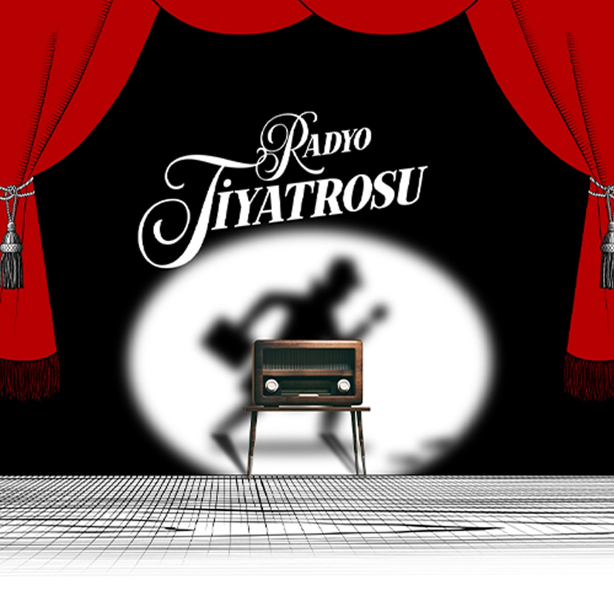
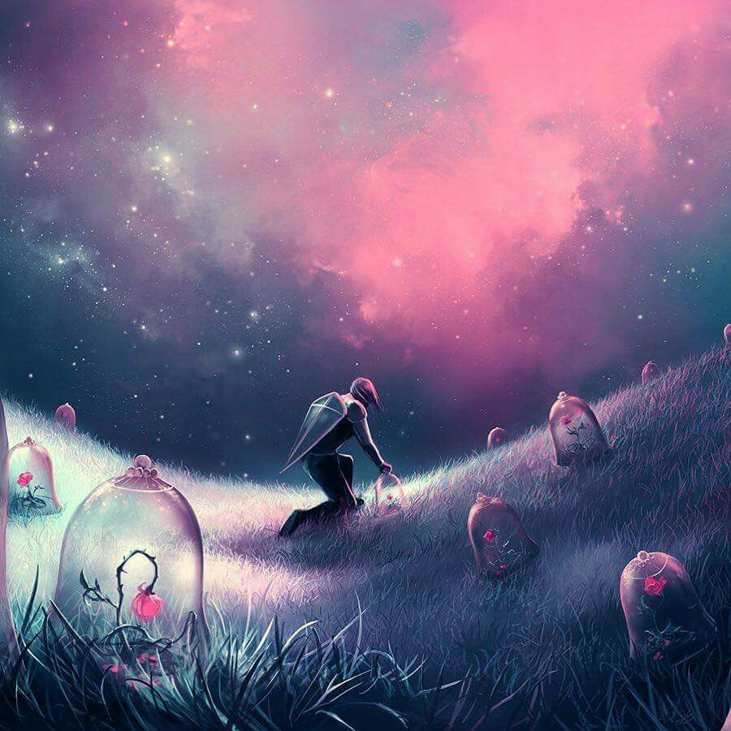
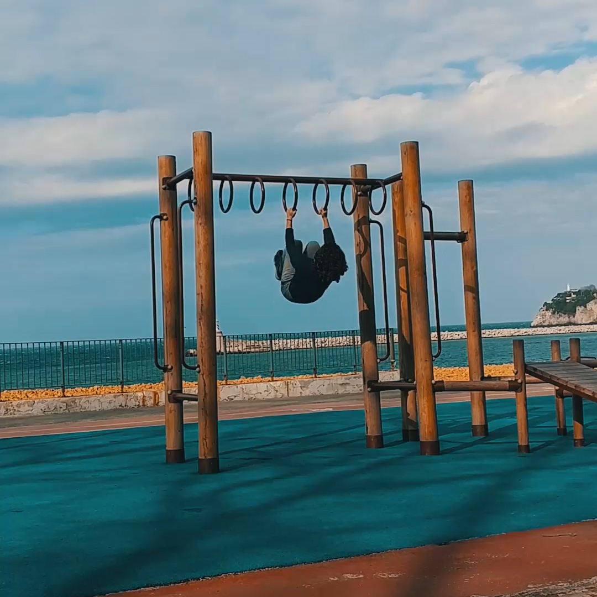
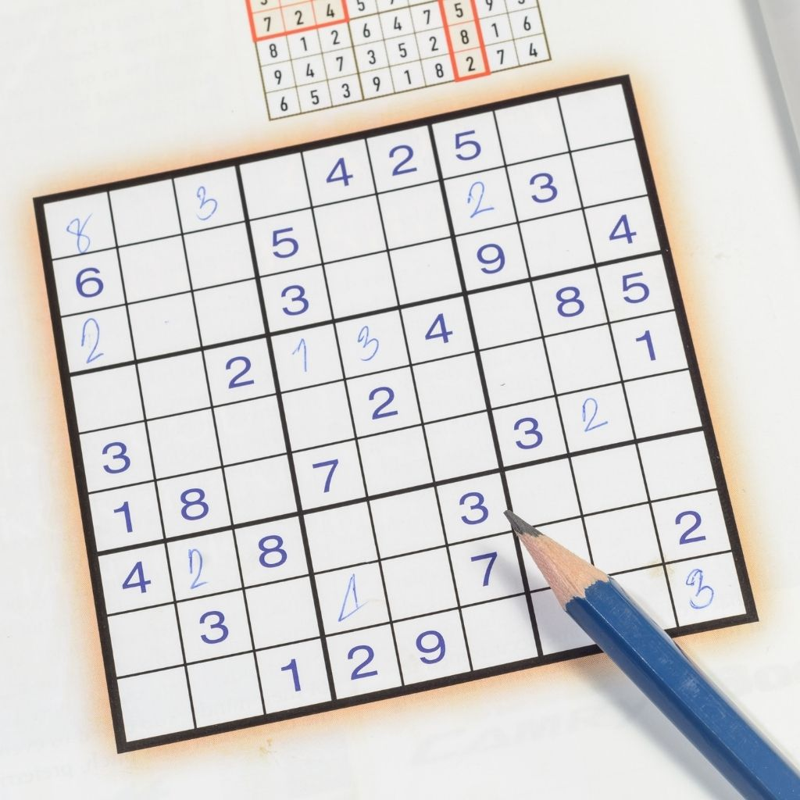
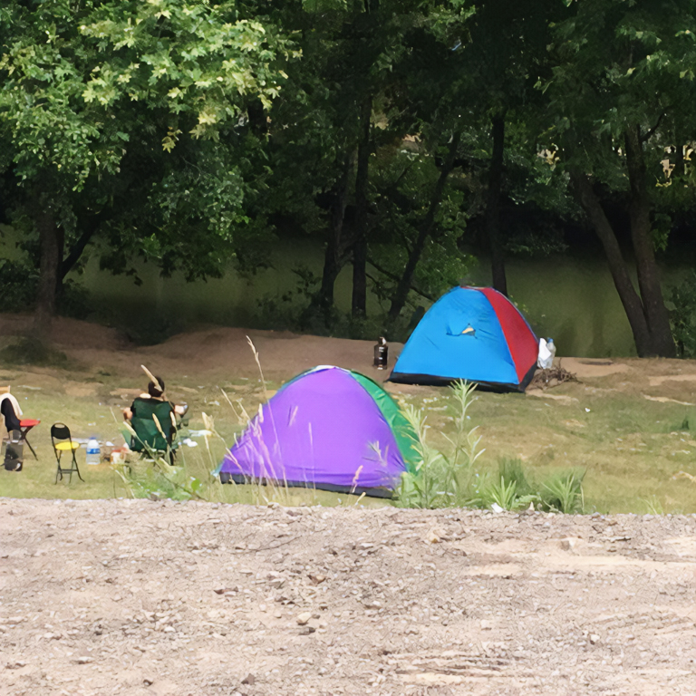
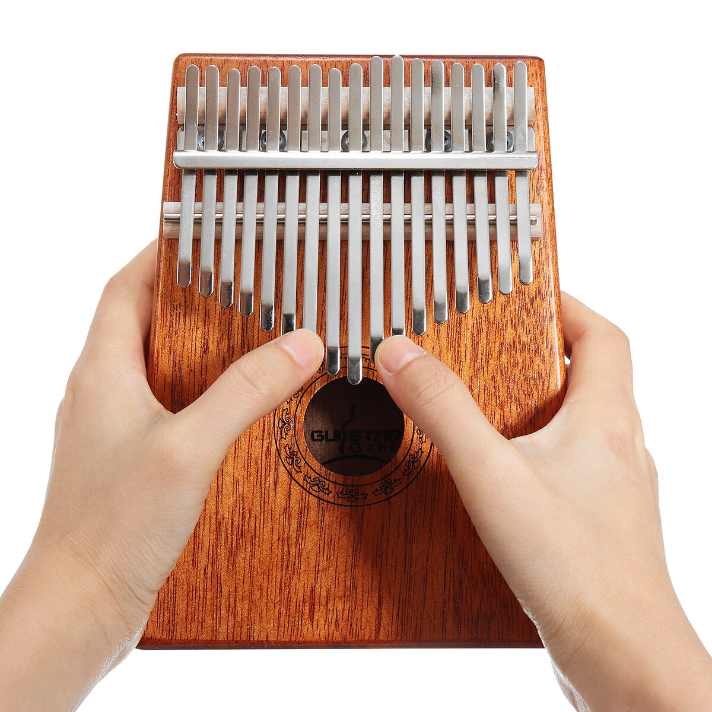

Radio Theatre
My hobby of listening to radio theater is a magical experience that takes me on a journey through time . This art form, shaped by the power of sound , allows me to visualize the emotions of the characters and the atmosphere of the story with my imagination . The nostalgic sound effects of those old radio broadcasts, the music and the actors ' voices transport me to another world and I find myself at a point where time stops. In a dark room , when I close my eyes, I feel as if I am hidden in the story. This hobby of mine is not only fun , but also an interaction that feeds my creativity and expands my imagination . Radio theater helps me create a special bond that allows me to get lost in the magical world of sound and to adventure in different times and places..
Graphic Design
Graphic design and Photoshop is a passionate hobby that opens doors to my creative world . The way colors, forms and texts come together to create impressive visual communications fills me with deep satisfaction . Thanks to Photoshop's extensive tools, I have the freedom to unleash my imagination on a digital canvas . Each project becomes a work of art for me , and the graphics I design give me the opportunity to express myself and create an emotional connection with the viewer . Color palettes, typography choices and composition are all part of a process where every detail is carefully considered . This hobby not only improves my technical skills , but also deepens my aesthetic understanding and encourages me to constantly explore new design trends and methods . Dealing with graphic design and Photoshop is for me an adventure of getting lost in a limitless world of art and expression and constantly reinventing myself.
Doing Calisthenics
These bodyweight exercises not only improve my physical strength, but also my mental endurance . Each workout strengthens my connection with my own body and allows me to push my limits . Kalisteniks offers a holistic fitness experience, targeting not only muscles but also balance , flexibility and coordination. The process of learning each new movement in this hobby requires patience , discipline and determination, and it helps me carry these qualities into my daily life . For me, Kalisteniks is not only a form of exercise that strengthens my body , but also a philosophy of life that motivates me in the process of discovering and overcoming my own limits.
Solve Sudoku
Sudoku is an enjoyable hobby that increases my mental acuity and helps me cope with stress . Placing numbers in a logical way not only strengthens my problem-solving skills but also increases my focus . Also, this game is a kind of meditation experience for me , an opportunity to get away from the chaos of everyday life.
Camping
For me, camping is an escape and a passion to integrate with nature and enjoy freedom . Setting up my tent in the lap of the forest, sitting by the fire in the open air, watching the stars , gives me the opportunity to get away from the chaos of city life. Camping not only rests my body but also renews my soul . The sounds of nature, the chirping of birds and the gentle breeze help me to de-stress and find inner peace . Sitting around the campfire, chatting with friends, sharing memories and laughter makes the experience even more special . Camping is a space of adventure, discovery and freedom for me ; each new camping experience takes me one step further in my love for nature.
Playing the Kalimba
For me, playing the kalimba means opening the doors to a spiritual serenade and a melodic journey . The timbres of this small instrument spread from the tips of my fingers and start a calming ritual . As I touch the keys between the metal shields, I have the power to create a soothing melody that transports me to another world . Each note gives me the opportunity to express what I feel and create an emotional connection . The Kalimba is a limitless playground for me to explore my creativity and combine music with my emotions . Spending time with this instrument is not only a melodic journey, but also a process of finding inner balance and peace . Exploring unique sounds and rhythms while playing the Kalimba provides a spiritual serenity , allowing me to feel the beauty of life more deeply.
